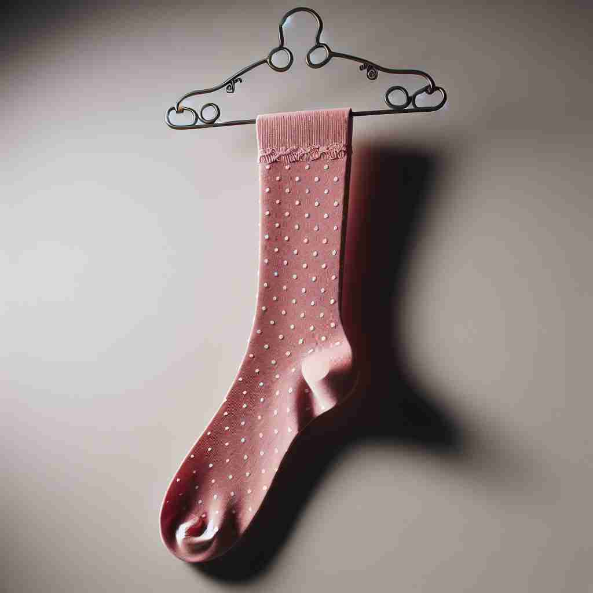

💬 She likes to wear black lace stockings with her dress.

💬 She likes to wear a stocking with her shoes.
🔈 ['stɒkɪŋ]
🗝️ n. a close-fitting covering for the foot and leg, usually knitted, worn inside shoes
🖼️ 想象一个时尚的商店里，一位顾客正在挑选精致的丝袜。这些丝袜有各种颜色和图案，紧密贴合着腿部，展示了它们'stocking'作为一种贴合脚和腿部的衣物的含义。
🔍 想象一只长袜（stocking）被填满。这个核心概念贯穿了所有含义：从穿在腿上的长袜，到填充商品的行为，再到圣诞袜和养殖鱼类。所有这些用法都涉及到'填满'或'装满'的概念，就像把脚塞进长袜一样。记住这个形象可以帮助你联想和记忆stocking的各种含义。
💬 She likes to wear black lace stockings with her dress.
💬 She likes to wear a stocking with her shoes.
🌳 由词根 "stock"（供应，储备）和后缀 "-ing" 组成。"stocking" 在此指代长袜，源自储备的概念，可能因为袜子是常备的穿着物品。
💡 可以联想到 "stock" 是指供应，当你想到家庭储备中总会有长袜这个供应品时，就能更好地记住 "stocking" 这个单词。
🗝️ n. the act of supplying or filling something with goods
🖼️ 在一个繁忙的超市里，工作人员正忙着将新鲜的水果和蔬菜摆放到货架上。他们专注地补充货品，以确保顾客总能找到所需的商品，体现了'stocking'作为补充或填补货物的动作。
💬 The stocking of the new supermarket shelves took several days.
❓ 从穿在腿上的长袜延伸到填充物品的行为
🗝️ v. to supply or fill with goods
🖼️ 在一个大型仓库中，经理正与员工一起审核库存清单，确认所有货架都已备齐商品。他指出待补充的区域，督促员工快速处理，展示了'stocking'作为供给或装满货物的过程。
💬 We need to stock the refrigerator before the guests arrive.
❓ 将物品填充入容器，类似于将脚填入长袜
🗝️ n. a decorative sock-shaped bag hung up at Christmas to be filled with small gifts
🖼️ 在温馨的圣诞夜，家庭成员围坐在炉火旁，交换礼物。壁炉上挂着装饰精美的圣诞袜，每个袜子里面都装满了小礼物和糖果，象征着'stocking'作为圣诞传统的一部分。
💬 The children hung their stockings by the fireplace on Christmas Eve.
❓ 形状和用途与腿部穿的长袜相似
🗝️ n. the practice of raising and keeping fish or shellfish in ponds or other waters
🖼️ 在一个宁静的乡村池塘边，渔民正在仔细观察水中的鱼群。他们定期投放小鱼苗，以确保渔业的可持续发展，展现了'stocking'作为养殖和维持水产生活的实践。
💬 The lake's fish stocking program has improved the local ecosystem.
❓ 将水域填满鱼类，类似于填满长袜